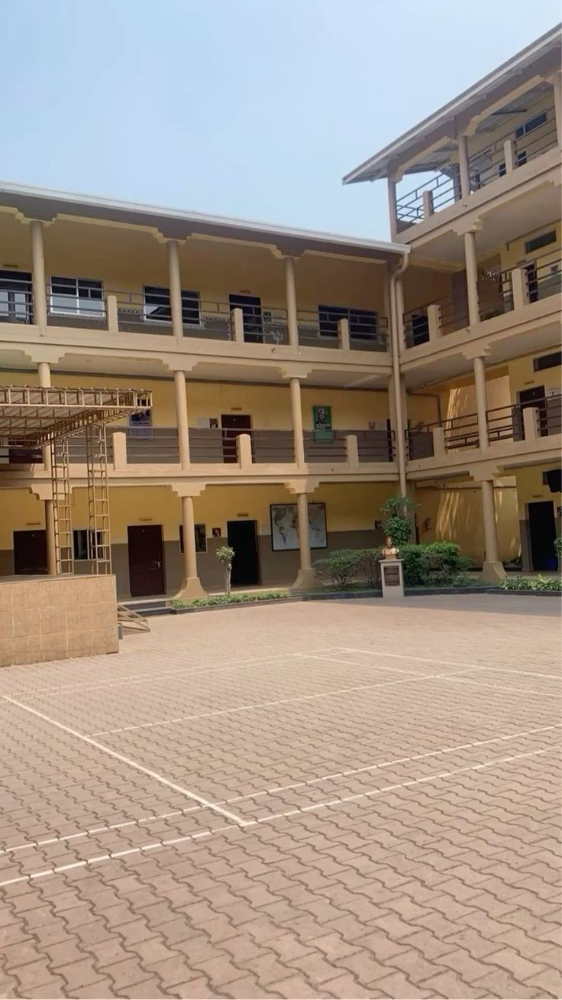

Discover
Martins School
Our story, vision, mission, and the dedicated team that makes it all possible.
Shaping Futures
Founded in 2014 in Ifo by Mr. Ibrahim Akinwunmi, Martins School set out with a singular vision: to create an educational institution where the Montessori philosophy and rigorous academic excellence could coexist and thrive.
What began as a small nursery class of 22 children in a rented bungalow has grown into a thriving community of over 600 students across two campuses — each one supported by a faculty of passionate, internationally trained educators.

The Beginning
Martins School opens with 22 students and 4 staff in a rented facility on Lagos Abeokuta Express Road, Ifo.
Our Own Campus
We move to our permanent 8, Apase Street campus, housing the full Montessori programme and Primary classes.
Secondary Division Opens
The Junior Secondary School launches with 48 students, meeting overwhelming community demand.
First SS3 Graduating Class
Our inaugural senior secondary class records a 100% WAEC pass rate — a milestone that set our standard.
STEM Lab & Library Wing
A state-of-the-art science, technology, and robotics centre opens alongside an expanded school library.
AMI Montessori Certification
Martins School becomes the first AMI-affiliated Montessori school in Ogun State.
Second Campus Opens
A second campus expands capacity to serve the growing Ifo and Ewekoro communities.
10 Years of Excellence
We celebrate a decade of shaping futures — 600+ students, 45+ staff, and a legacy that grows each year.
Our Vision
To be the leading school in West Africa where every child — regardless of background — reaches their fullest potential in a nurturing, stimulating environment.
Our Mission
To deliver outstanding Montessori and Secondary education that develops confident, compassionate, and academically excellent young people who are ready to lead in a changing world.
Excellence
We set high standards and celebrate every milestone of achievement.
Integrity
Honesty and ethical conduct are the foundation of everything we do.
Curiosity
We cultivate a love of questions, discovery, and lifelong learning.
Community
We are a family — students, staff, and parents working as one.
Our school is led by experienced, passionate educators who bring decades of expertise and a deep commitment to student success.

Mrs. Barakat Akinwunmi
Head of School
Mr. James Okonkwo
Deputy Principal
Mrs. Fatima Balogun
Montessori Lead
Mr. Taiwo Nwachukwu
Secondary HOD
Mrs. Ada Eze
Admissions Officer
Mr. Ibrahim Akinwunmi
Founder & Board Chair
Every corner of Martins School is designed to inspire — from our Montessori classrooms to our senior secondary science labs.
Science & STEM Labs
Fully equipped physics, chemistry, biology, and robotics labs for secondary students.
Library & Resource Centre
Over 8,000 volumes plus digital research tools and quiet study spaces.
Sports & Recreation
Football pitch, basketball courts, athletics track, and indoor multipurpose hall.
Arts & Music Studio
Dedicated visual arts studio and music room with instruments for all levels.
ICT Centre
60-station computer lab with high-speed internet for coding, research, and digital literacy.
Cafeteria & Nutrition
Nutritious, freshly prepared meals daily — catering to dietary needs and healthy habits.
Our Head of School
Every child who walks through our doors brings a unique constellation of talents. Our faculty and staff are deeply committed to uncovering those gifts and helping each student shine. Education at Martins School is not a transaction — it is a relationship, a partnership between school, student, and family.
I warmly invite you to visit us, ask questions, and become part of our extraordinary community.